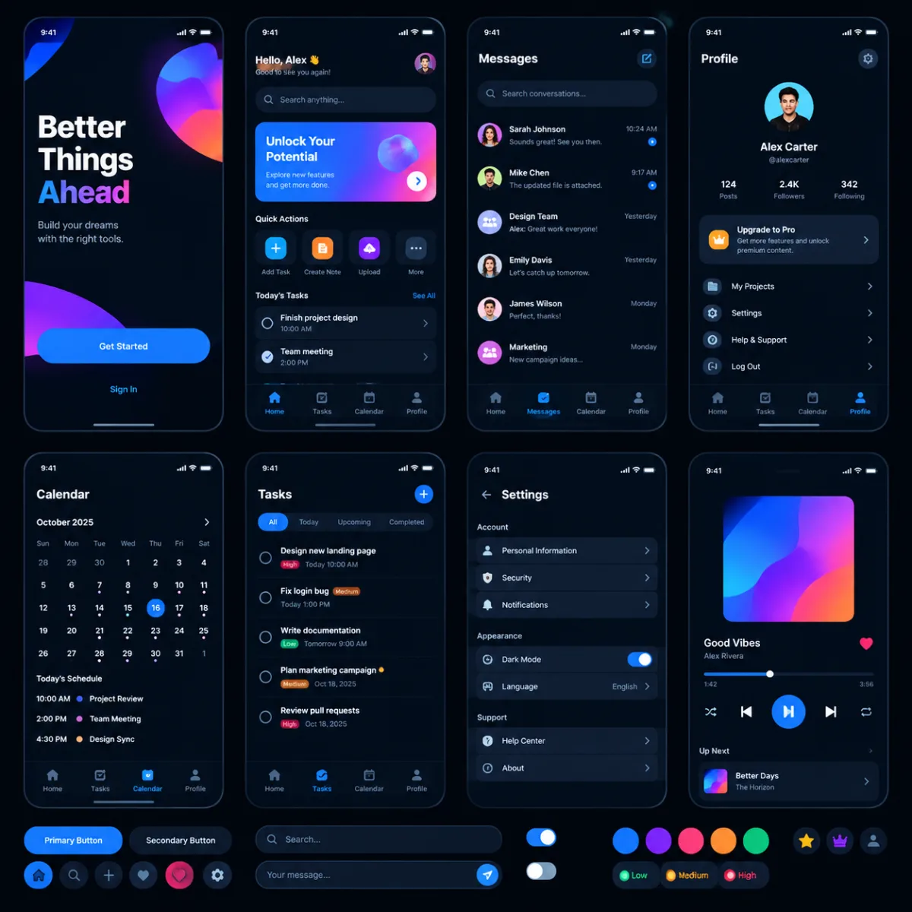
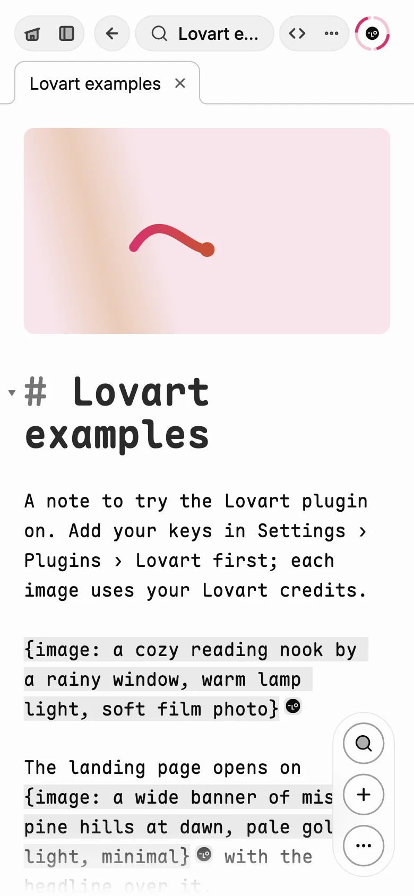
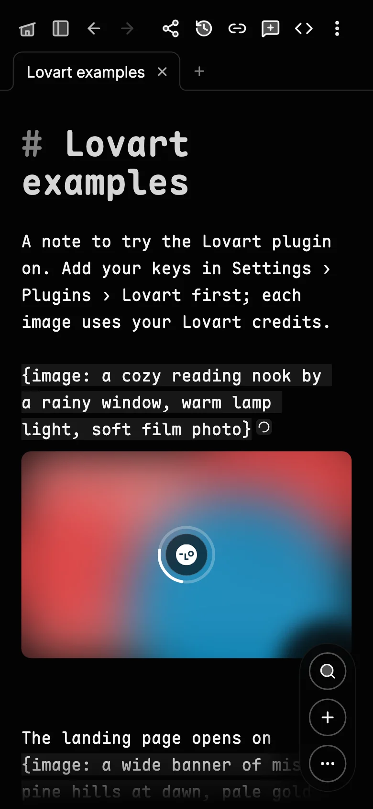
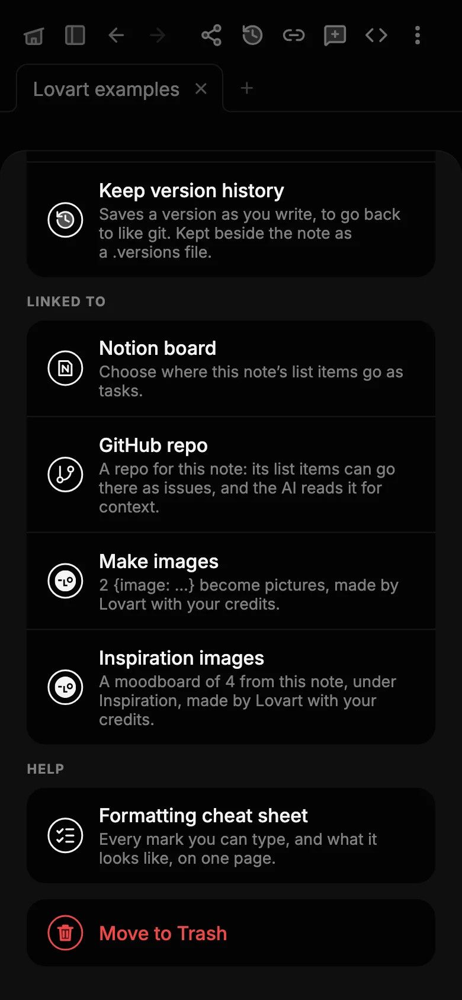
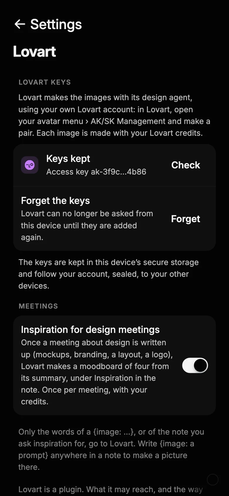

Lovart, in Ghost.md
Images from your notes,
by Lovart’s design agent.
Write {image: …} where a picture should go, ask any note for a moodboard, and let a design meeting come back with inspiration. Lovart makes the images; Ghost.md puts them in your note.
Images in a note
Write the picture you want, where you want it.
Type {image: and what you have in mind, and close it with }. As soon as it is closed, Lovart’s mark appears beside it: tap the mark to make that one, or choose Make images from the note’s menu to make them all.
- It takes the cue’s place. The picture goes where you wrote it. A cue in the middle of a sentence leaves the sentence whole, with the picture on the line after it.
- Say it in the words. Lovart’s agent picks the model and the size from what you write, so “a wide banner” or “square, flat colours” is how you ask for them.
- Marked as Lovart’s. A picture Lovart made carries its mark in the corner, on every device, so it is never mistaken for a photo you took.
## Homepage
The hero {image: a misty forest at dawn, soft light} goes on top.
{image: three logo marks for a fox brand, flat colours}{?question} stays an AI fill: only {image: …} goes to Lovart.Made with Lovart
Three cues, three pictures.
Each of these was a line in a note. Lovart made it, and Ghost.md put it where the line was.
-
{image: a cozy reading nook by a rainy window, warm lamp light, soft film photo} -
{image: a wide banner of misty pine hills at dawn, pale gold light, minimal} -

{image: mobile dark UI kit with vibrant colors}
How it goes
From a line to a picture.

Write the cue
Close it with
}and Lovart’s mark appears beside it.
Press Return
Lovart starts on it, and a blurred stand-in waits where the picture will be.

It lands
The picture takes the cue’s place, Lovart’s mark in its corner, on every device.

Or all at once
Make images does every cue; Inspiration images makes a moodboard of the note.
Inspiration
A moodboard from any note.
Choose Inspiration images from a note’s menu. Lovart reads the note’s title and its summary, or its opening words, and makes four images for the ideas in it, under ## Inspiration. Ask again and they join the ones already there.
Design meetings
The design review comes back with ideas.
Switch on Inspiration for design meetings and a meeting about design (mockups, a brand, a layout, a logo) gets a moodboard of four from its summary once it is written up, under Inspiration in its note. Once per meeting, and only when it reads as a design meeting: a standup that mentions the UI once is left alone.
Set it up
Your Lovart account, your keys.
- Make a key pair in Lovart. On lovart.ai, open your avatar menu, then AK/SK Management, and make an access key and a secret key.
- Add the plugin. In Ghost.md, Settings › Plugins, find Lovart under AI and add it.
- Keep the keys. Paste both on Lovart’s page. They are checked with Lovart before they are kept.
- Sealed, on your devices. The keys are kept in your device’s secure store, and reach your other devices sealed to your account, never readable on the way. Only signatures go to Lovart; the secret key never leaves your devices.
- Your credits. Images are made with your Lovart plan’s credits. A step Lovart says costs more (a premium model, a video) is never approved for you: Ghost.md tells you, and you approve it in Lovart.
- Only what you ask about. The words of a cue, or the title and summary of the note you ask inspiration for, go to Lovart. Nothing else of your notes does.

The fine print
In the app on Android, iPhone and the Mac. Lovart is a separate service with its own terms and plans, and not part of Ghost.md; ask Lovart which plans include API keys. Lovart’s name and mark are theirs.